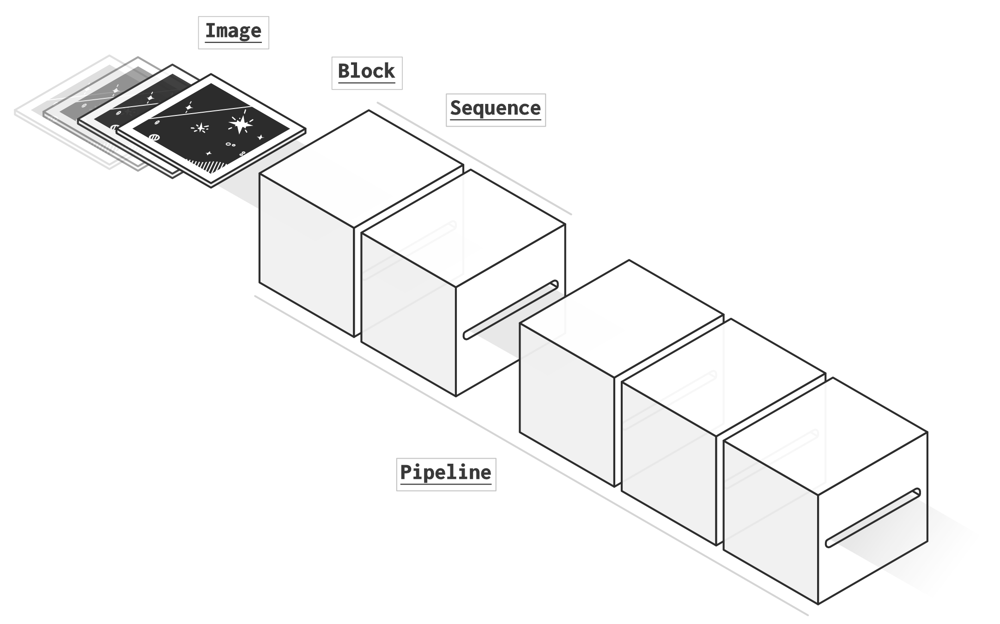

What is a pipeline?¶
{kind=link}
A pipeline, strictly speaking, is a series of connected tubes running a fluid. In the scientific literature, the word refers to processing pipelines in which data are flowing, going through processing units as in tubes. prose contains the structure to build modular image processing pipelines with three key objects: Images going through Blocks assembled in Sequences.
Image, Block and Sequence¶

An Image object contains the Image.data as well as metadata in Image.header. A Block is a single unit of processing acting on the Image object, which can reads and writes any of its attributes or modifies data. Finally a Sequence is a succesion of Block.
With this architecture prose can deal with any type of FITS images (check Telescope object next).
Example: Hello world¶
Let’s have a random set of images
from prose import Image, Block, Sequence
import numpy as np
np.random.seed(42)
images = [Image(data=np.random.rand(10,10)) for i in range(5)]
Here is a block printing hello world and the image mean
class HelloWorld(Block):
def run(self, image):
image.mean = np.mean(image.data)
print(f"Hello world (mean: {image.mean:.2f})")
and running a sequence with it
sequence = Sequence([
HelloWorld(),
])
sequence.run(images)
RUN Hello world: 100%|█████████████████████| 5/5 [00:00<00:00, 15720.78 images/s
Hello world (mean: 0.47)
Hello world (mean: 0.50)
Hello world (mean: 0.52)
Hello world (mean: 0.49)
Hello world (mean: 0.52)